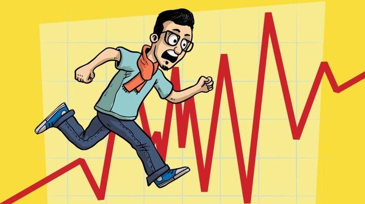

Tâm lý FOMO trong kỷ nguyên đầu tư 4.0
Trong thời đại mạng xã hội và thông tin lan truyền với tốc độ ánh sáng, nỗi sợ bị bỏ lỡ — hay còn gọi là tâm lý FOMO (Fear of Missing Out) — đang trở thành một trong những yếu tố tâm lý chi phối mạnh mẽ hành vi tài chính của con người. Không ít người lao vào đầu tư tiền ảo, cổ phiếu, hay các xu hướng “làm giàu nhanh” chỉ vì sợ mình sẽ bị bỏ lại phía sau. Cơn sóng FOMO ấy khiến nhiều nhà đầu tư mới trở thành “con mồi” của những kẻ “lùa gà” — bị cuốn theo đám đông, mua ở đỉnh, bán ở đáy, và kết cục là mất trắng.
Từ một khái niệm tưởng chừng chỉ liên quan đến mạng xã hội, FOMO ngày nay đã len lỏi sâu vào thị trường tài chính, kinh doanh khởi nghiệp, và cả đời sống cá nhân, tạo nên nhiều hệ quả khó lường cho nền kinh tế hiện đại.
Đơn cử như vụ tiền số AntEx của Shark Bình, ước tính hàng ngàn người đã bị cuốn vào cơn sốt đầu tư, tin rằng đây là “dự án tỷ đô” sẽ mang lại lợi nhuận khổng lồ. Họ bỏ tiền, kêu gọi bạn bè cùng tham gia, thậm chí vay mượn để không “bỏ lỡ cơ hội”. Nhưng khi thị trường sụp đổ, đồng token gần như mất giá trị, nhiều nhà đầu tư trắng tay, còn kẻ đứng sau đã kịp rút lui.
Hôm nay hãy cùng TrithucWorld tìm hiểu về tâm lý FOMO trong kỷ nguyên đầu tư 4.0 nhé!
1. Nguồn gốc và cơ chế tâm lý của FOMO
Hiện tượng FOMO (Fear of Missing Out) – nỗi sợ bị bỏ lỡ – thực ra không chỉ là một cảm xúc thoáng qua, mà là một phản ứng tâm lý có gốc rễ sâu xa trong cấu trúc não bộ con người. Từ thời nguyên thủy, con người sống theo bầy đàn và luôn cần cảm giác được thuộc về một nhóm để đảm bảo an toàn sinh tồn. Bị tách khỏi cộng đồng đồng nghĩa với nguy cơ bị bỏ rơi, không được chia sẻ thức ăn hoặc bảo vệ. Chính vì vậy, nỗi sợ bị “ra rìa” đã ăn sâu vào tiềm thức con người như một cơ chế sinh tồn tự nhiên.
Trong bối cảnh xã hội hiện đại, cơ chế ấy vẫn tồn tại nhưng được “kích hoạt” theo cách khác – thay vì sợ bị tách khỏi bộ tộc, ta sợ bỏ lỡ cơ hội, thông tin hoặc xu hướng mà người khác đang tận hưởng. Khi thấy người khác đầu tư thắng lớn, đi du lịch xa hoa, hay cập nhật những “dự án hot”, não bộ lập tức giải phóng dopamine, tạo ra cảm giác hưng phấn và thôi thúc ta phải làm theo để không bị bỏ lại phía sau.
Đặc biệt, mạng xã hội đóng vai trò như chất xúc tác mạnh mẽ. Chỉ với vài cú lướt, ta chứng kiến hàng trăm người khoe thành công, giàu có, hạnh phúc — dù phần lớn chỉ là bề nổi hoặc hình ảnh được dàn dựng. Thế nhưng não bộ lại không phân biệt được thật – giả, mà chỉ hiểu rằng “mọi người đều đang làm điều đó, còn mình thì chưa”. Chính điều này khiến FOMO trở thành một vòng xoáy dopamine, khi cảm giác thèm khát thông tin và cơ hội ngày càng tăng, buộc ta phải kiểm tra mạng xã hội, tin tức, hay thị trường tài chính liên tục.
Tóm lại, FOMO không chỉ là một thói quen xấu, mà là một phản xạ tâm lý mang tính sinh học, được nuôi dưỡng mạnh mẽ bởi công nghệ và truyền thông hiện nay. Nó khiến con người hành động dựa trên cảm xúc sợ hãi thay vì lý trí, dẫn đến những quyết định vội vàng – đặc biệt trong đầu tư, tài chính và đời sống cá nhân.
2. FOMO trong kinh tế – Khi nỗi sợ trở thành động lực tiêu dùng
Trong nền kinh tế hiện đại, FOMO không chỉ là hiện tượng tâm lý mà đã trở thành một lực thúc đẩy hành vi tiêu dùng và đầu tư mạnh mẽ. Ở lĩnh vực tài chính, FOMO khiến nhiều người đổ xô vào các “cơn sốt” như tiền điện tử, chứng khoán, hay bất động sản mà không thực sự hiểu bản chất của thị trường. Họ sợ bỏ lỡ “cơ hội đổi đời” nên đầu tư theo đám đông — và kết quả là nhiều người thua lỗ nặng khi bong bóng vỡ. Các đợt “sập sàn coin” từng xảy ra trước đây là ví dụ điển hình cho tâm lý đầu tư bị dẫn dắt bởi FOMO.

Không chỉ dừng ở đầu tư, thị trường tiêu dùng cũng chịu ảnh hưởng rõ rệt. Các thương hiệu liên tục đánh vào tâm lý “sợ bỏ lỡ” bằng những chiến dịch như flash sale, deal trong 24h, sản phẩm giới hạn (limited edition) hay đồng hồ đếm ngược (countdown timer). Người mua hàng vì sợ “cháy hàng” hoặc “mọi người đều có” hơn là vì nhu cầu thực sự của bản thân.
Trong công việc và khởi nghiệp, FOMO lại thể hiện dưới hình thức “cuộc đua năng suất” – sợ bị tụt lại phía sau, sợ mất cơ hội nghề nghiệp, khiến nhiều người làm việc quá sức hoặc chạy theo xu hướng mà không có chiến lược lâu dài.
Các doanh nghiệp hiện nay hiểu rõ sức mạnh của FOMO và khai thác nó triệt để trong marketing. Tuy nhiên, nếu người tiêu dùng không đủ tỉnh táo, nỗi sợ này dễ biến thành công cụ thao túng, khiến họ tiêu tiền hoặc đầu tư theo cảm xúc thay vì lý trí.
3. Mặt trái của FOMO – Khi nỗi sợ dẫn đến căng thẳng và sai lầm
Phía sau vẻ ngoài năng động và “luôn cập nhật” của người mắc FOMO là một áp lực tinh thần âm thầm nhưng dai dẳng. Cảm giác sợ bỏ lỡ khiến họ liên tục so sánh bản thân với người khác — từ thành công, công việc, cho đến lối sống. Điều này dần dẫn đến mất tập trung, lo âu, và sự bất mãn với chính mình, vì lúc nào họ cũng thấy “người khác đang làm tốt hơn”. Càng chạy theo, họ càng cảm thấy trống rỗng, như thể bản thân luôn chậm một nhịp so với thế giới.
Trong lĩnh vực tài chính, FOMO là nguyên nhân hàng đầu của những quyết định sai lầm. Nhà đầu tư “mua đỉnh – bán đáy”, nhảy vào thị trường khi mọi người đều hô hào “cơ hội vàng”, nhưng lại rút lui khi giá rơi. Việc đầu tư theo cảm xúc thay vì phân tích khiến nhiều người mất trắng chỉ vì sợ “lỡ chuyến tàu”. Tương tự, trong đời sống tiêu dùng, FOMO khiến con người chi tiêu vượt khả năng, mua sắm những thứ không thực sự cần thiết chỉ để cảm thấy mình “không bị bỏ lại”.
Không chỉ ảnh hưởng đến tài chính, FOMO còn bào mòn niềm vui sống. Khi luôn bị thôi thúc phải có, phải làm, phải chứng minh điều gì đó, con người dần đánh mất khả năng tận hưởng hiện tại. Cuộc sống trở thành một chuỗi so sánh – chạy đua – thất vọng. Những “cơn sốt” đầu tư như tiền số AntEx, các trào lưu công nghệ mới, hay xu hướng sống ảo trên mạng xã hội đều cho thấy cách FOMO khiến con người rời xa giá trị thật của hạnh phúc và sự bình an nội tâm.
4. Cách vượt qua và kiểm soát tâm lý FOMO
Để thoát khỏi vòng xoáy của FOMO, trước hết chúng ta cần nhận diện được dấu hiệu của nó trong chính bản thân. Nếu bạn thường xuyên cảm thấy bất an khi thấy người khác “thành công hơn”, lo lắng khi bỏ lỡ một cơ hội đầu tư, hay không yên lòng khi không kiểm tra mạng xã hội — đó chính là biểu hiện điển hình của FOMO. Việc ý thức được mình đang bị chi phối bởi nỗi sợ bị bỏ lại là bước đầu tiên quan trọng để kiểm soát nó.
Một trong những phương pháp hữu hiệu nhất là rèn luyện Mindfulness. Thực hành Mindfulness giúp con người quay về hiện tại, lắng nghe cảm xúc thật của bản thân thay vì bị kéo theo đám đông. Dành mỗi ngày vài phút để hít thở sâu, thiền định, hoặc đơn giản là tạm xa màn hình điện thoại cũng có thể giúp tâm trí trở nên tĩnh lặng hơn. Khi chúng ta thật sự hiện diện, FOMO sẽ dần mất đi sức mạnh của nó.
Bên cạnh đó, thiết lập mục tiêu cá nhân rõ ràng là chìa khóa để không bị cuốn theo người khác. Khi bạn biết mình đang theo đuổi điều gì, bạn sẽ không còn dễ bị dao động bởi “thành công của người khác” hay những trào lưu chóng vánh. Hãy nhớ rằng mỗi người có một hành trình và thời điểm khác nhau — điều quan trọng là tiến bước đúng hướng, chứ không phải nhanh nhất.
Hạn chế tiêu thụ nội dung mạng xã hội cũng là một biện pháp thiết thực. Bạn có thể chọn lọc nguồn tin tích cực, hủy theo dõi những tài khoản khiến mình cảm thấy tự ti hoặc áp lực. Việc giảm bớt thời gian online giúp não bộ được “giải độc” khỏi những so sánh liên tục.
Cuối cùng, hãy học cách tận hưởng JOMO (Joy of Missing Out) — niềm vui khi không cần phải biết hoặc có mọi thứ. JOMO không phải là sự thờ ơ, mà là sự tự do trong việc chọn điều gì thực sự quan trọng với mình. Khi chấp nhận rằng không cần phải tham gia mọi xu hướng, bạn sẽ tìm lại được sự bình yên và niềm vui thật sự từ bên trong.
Kết luận – Khi bình tĩnh trở thành sức mạnh thật sự
Trong một thế giới chuyển động quá nhanh, nơi mọi xu hướng, cơ hội và tin tức đều ập đến chỉ trong vài giây, FOMO trở thành căn bệnh tinh thần của thời đại số. Nó khiến con người không ngừng chạy theo, so sánh, và sợ hãi nếu mình “bỏ lỡ” điều gì đó — dù đôi khi điều ấy chẳng thật sự quan trọng.
Nhưng rồi, chúng ta dần nhận ra rằng sự bình tĩnh mới là sức mạnh thật sự. Bởi khi biết dừng lại, quan sát và lắng nghe bản thân, ta sẽ không còn bị cuốn vào vòng xoáy đám đông. Cơ hội thật sự không nằm ở việc nắm bắt mọi thứ, mà ở khả năng chọn đúng điều mình cần và kiên định với nó.
Vượt qua FOMO không phải là từ bỏ thế giới, mà là sống tỉnh thức hơn giữa thế giới ấy — để không bị dẫn dắt bởi nỗi sợ, mà được dẫn dắt bởi sự hiểu biết và an yên trong chính mình.